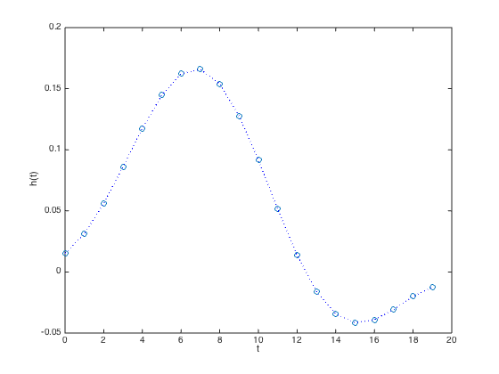
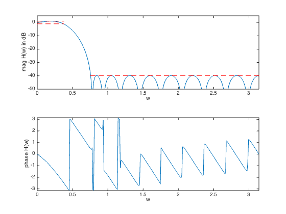

% "FIR Filter Design via Spectral Factorization and Convex Optimization" % by S.-P. Wu, S. Boyd, and L. Vandenberghe % (figures are generated) % % Designs an FIR lowpass filter using spectral factorization method where we: % - minimize maximum stopband attenuation % - have a constraint on the maximum passband ripple % % minimize max |H(w)| for w in the stopband % s.t. 1/delta <= |H(w)| <= delta for w in the passband % % We change variables via spectral factorization method and get: % % minimize max R(w) for w in the stopband % s.t. (1/delta)^2 <= R(w) <= delta^2 for w in the passband % R(w) >= 0 for all w % % where R(w) is the squared magnited of the frequency response % (and the Fourier transform of the autocorrelation coefficients r). % Variables are coeffients r. delta is the allowed passband ripple. % This is a convex problem (can be formulated as an LP after sampling). % % Written for CVX by Almir Mutapcic 02/02/06 %********************************************************************* % user's filter specs (for a low-pass filter example) %********************************************************************* % number of FIR coefficients (including the zeroth one) n = 20; wpass = 0.12*pi; % end of the passband wstop = 0.24*pi; % start of the stopband delta = 1; % maximum passband ripple in dB (+/- around 0 dB) %********************************************************************* % create optimization parameters %********************************************************************* % rule-of-thumb discretization (from Cheney's Approx. Theory book) m = 15*n; w = linspace(0,pi,m)'; % omega % A is the matrix used to compute the power spectrum % A(w,:) = [1 2*cos(w) 2*cos(2*w) ... 2*cos(n*w)] A = [ones(m,1) 2*cos(kron(w,[1:n-1]))]; % passband 0 <= w <= w_pass ind = find((0 <= w) & (w <= wpass)); % passband Lp = 10^(-delta/20)*ones(length(ind),1); Up = 10^(+delta/20)*ones(length(ind),1); Ap = A(ind,:); % transition band is not constrained (w_pass <= w <= w_stop) % stopband (w_stop <= w) ind = find((wstop <= w) & (w <= pi)); % stopband As = A(ind,:); %******************************************************************** % optimization %******************************************************************** % formulate and solve the magnitude design problem cvx_begin variable r(n,1) % this is a feasibility problem minimize( max( abs( As*r ) ) ) subject to % passband constraints Ap*r >= (Lp.^2); Ap*r <= (Up.^2); % nonnegative-real constraint for all frequencies (a bit redundant) A*r >= 0; cvx_end % check if problem was successfully solved disp(['Problem is ' cvx_status]) if ~strfind(cvx_status,'Solved') return end % compute the spectral factorization h = spectral_fact(r); % compute the max attenuation in the stopband (convert to original vars) Ustop = 10*log10(cvx_optval); fprintf(1,'The max attenuation in the stopband is %3.2f dB.\n\n',Ustop); %********************************************************************* % plotting routines %********************************************************************* % frequency response of the designed filter, where j = sqrt(-1) H = [exp(-j*kron(w,[0:n-1]))]*h; figure(1) % FIR impulse response plot([0:n-1],h','o',[0:n-1],h','b:') xlabel('t'), ylabel('h(t)') figure(2) % magnitude subplot(2,1,1) plot(w,20*log10(abs(H)), ... [0 wpass],[delta delta],'r--', ... [0 wpass],[-delta -delta],'r--', ... [wstop pi],[Ustop Ustop],'r--') xlabel('w') ylabel('mag H(w) in dB') axis([0 pi -50 5]) % phase subplot(2,1,2) plot(w,angle(H)) axis([0,pi,-pi,pi]) xlabel('w'), ylabel('phase H(w)')
Calling SDPT3 4.0: 1056 variables, 249 equality constraints
For improved efficiency, SDPT3 is solving the dual problem.
------------------------------------------------------------
num. of constraints = 249
dim. of socp var = 456, num. of socp blk = 228
dim. of linear var = 600
*******************************************************************
SDPT3: Infeasible path-following algorithms
*******************************************************************
version predcorr gam expon scale_data
NT 1 0.000 1 0
it pstep dstep pinfeas dinfeas gap prim-obj dual-obj cputime
-------------------------------------------------------------------
0|0.000|0.000|7.4e+03|8.3e+01|9.1e+05| 8.193787e+02 0.000000e+00| 0:0:00| chol 1 1
1|0.647|0.678|2.6e+03|2.7e+01|4.1e+05| 2.150580e+03 -2.880747e+02| 0:0:00| chol 1 1
2|0.706|0.844|7.7e+02|4.3e+00|1.3e+05| 2.845166e+03 -4.506275e+02| 0:0:00| chol 1 1
3|0.935|0.783|5.0e+01|9.5e-01|1.2e+04| 1.793761e+03 -4.604846e+02| 0:0:00| chol 1 1
4|0.882|1.000|5.9e+00|8.1e-03|1.9e+03| 6.197634e+02 -3.453529e+02| 0:0:00| chol 1 1
5|0.982|0.869|1.1e-01|1.8e-03|1.3e+02| 1.228449e+01 -1.009221e+02| 0:0:00| chol 1 1
6|0.990|0.937|1.0e-03|1.9e-04|1.2e+01| 1.140883e+00 -1.052448e+01| 0:0:00| chol 1 1
7|0.568|0.934|4.5e-04|2.3e-04|5.5e+00| 8.200442e-01 -4.634545e+00| 0:0:00| chol 1 1
8|0.925|0.922|3.3e-05|1.1e-04|4.8e-01| 8.625425e-02 -3.979458e-01| 0:0:00| chol 1 1
9|0.714|0.663|9.5e-06|4.3e-05|2.2e-01| 2.896298e-02 -1.918641e-01| 0:0:00| chol 1 1
10|0.768|1.000|2.2e-06|1.9e-06|6.2e-02| 1.536843e-02 -4.621078e-02| 0:0:00| chol 1 1
11|0.770|1.000|5.1e-07|4.4e-07|1.2e-02| 4.430290e-03 -7.088877e-03| 0:0:00| chol 1 1
12|0.869|0.685|6.7e-08|2.4e-07|4.5e-03| 7.613180e-04 -3.695987e-03| 0:0:00| chol 1 1
13|0.994|0.727|4.2e-10|7.9e-08|1.7e-03| 2.139177e-04 -1.488904e-03| 0:0:00| chol 1 1
14|0.815|1.000|7.7e-11|8.4e-11|4.3e-04| 9.343243e-05 -3.410733e-04| 0:0:00| chol 1 1
15|0.967|0.640|2.6e-12|4.6e-11|2.2e-04| 2.041452e-06 -2.140884e-04| 0:0:00| chol 1 2
16|0.790|0.725|1.9e-12|1.4e-11|1.4e-04|-2.904588e-05 -1.663249e-04| 0:0:00| chol 1 1
17|1.000|1.000|1.7e-12|1.0e-12|4.9e-05|-6.928659e-05 -1.181075e-04| 0:0:00| chol 1 2
18|0.873|0.940|3.7e-12|1.1e-12|1.5e-05|-9.198399e-05 -1.068634e-04| 0:0:00| chol 1 1
19|0.875|0.865|7.1e-13|1.1e-12|3.3e-06|-1.019311e-04 -1.051991e-04| 0:0:00| chol 1 2
20|0.887|0.902|4.4e-12|1.1e-12|5.5e-07|-1.043382e-04 -1.048878e-04| 0:0:00| chol 1 1
21|0.932|0.967|2.5e-11|1.0e-12|5.5e-08|-1.047839e-04 -1.048393e-04| 0:0:00| chol 1 1
22|0.994|0.992|9.7e-12|1.5e-12|1.1e-09|-1.048357e-04 -1.048368e-04| 0:0:00|
stop: max(relative gap, infeasibilities) < 1.49e-08
-------------------------------------------------------------------
number of iterations = 22
primal objective value = -1.04835736e-04
dual objective value = -1.04836798e-04
gap := trace(XZ) = 1.06e-09
relative gap = 1.06e-09
actual relative gap = 1.06e-09
rel. primal infeas (scaled problem) = 9.68e-12
rel. dual " " " = 1.51e-12
rel. primal infeas (unscaled problem) = 0.00e+00
rel. dual " " " = 0.00e+00
norm(X), norm(y), norm(Z) = 8.6e-01, 3.1e-01, 7.4e+00
norm(A), norm(b), norm(C) = 1.6e+02, 2.0e+00, 9.9e+00
Total CPU time (secs) = 0.36
CPU time per iteration = 0.02
termination code = 0
DIMACS: 9.7e-12 0.0e+00 6.6e-12 0.0e+00 1.1e-09 1.1e-09
-------------------------------------------------------------------
------------------------------------------------------------
Status: Solved
Optimal value (cvx_optval): +0.000104837
Problem is Solved
The max attenuation in the stopband is -39.79 dB.
 